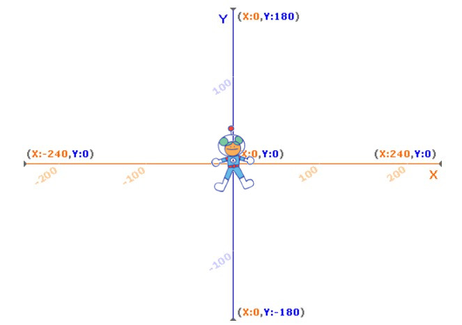

Bevor wir nun mit der Programmierung der Figur beginnen, möchte ich dir noch kurz das Koordinatensystem erklären, in welchem sich deine Figur bewegt. Lies dir den Text gut durch. Du benötigst das Wissen um nachher deine Figur bewegen zu können.
Du siehst den Bereich auf dem sich deine Figur bewegen kann im Vorschaufenster. Er hat die Form eines Rechteckes und ist etwas breiter als hoch. Dieser Bereich ist in ganz viele kleine Felder unterteilt, die wir Punkte nennen. Wenn deine Figur (in meinem Fall Kiran) genau in der Mitte des Bereichs steht. Dann steht er am Punkt (0, 0).
Wobei die erste Null seine Position im horizontalen Bereich beschreibt. Also im Bereich von links nach rechts. Wir nennen diese Position auch "X-Position". Du kannst den Wert der X-Position deiner Figur auch in der Figuren-Übersicht ablesen. Je weiter deine Figur nach rechts wandert, um so größer wird der Wert der X-Position. Der höchstmögliche Wert liegt bei 240. Wenn deine Figur nach links wandert, dann verändert sich die X-Position in den negativen Bereich. Das erkennst du daran, dass vor dem Wert ein "-" (Minus) steht. Je weiter links die Figur positioniert ist, umso größer ist der Wert vor dem Minus. Ganz weit links beträgt der maximale Wert "-240".
Die zweite Null beschreibt die vertikale Position der Figur. Also die Position im Bereich von oben nach unten. Wir nennen diese Position auch "Y-Position". Auch hier findest du den Wert der Y-Position deiner Figur in der Figuren-Übersicht. Je weiter deine Figur nach oben wandert, um so größer wird der Wert der Y-Position. Der höchstmögliche Wert ist die 180 - deine Figur befindet sich dann am oberen Rand. Bewegt sich deine Figur nach unten, so werden die Y-Werte wieder negativ. Das heißt ein "-" (Minus) wird davor geschrieben. Wenn deine Figur ganz weit am unteren Rand ist, dann beträgt der Y-Wert "-180".
